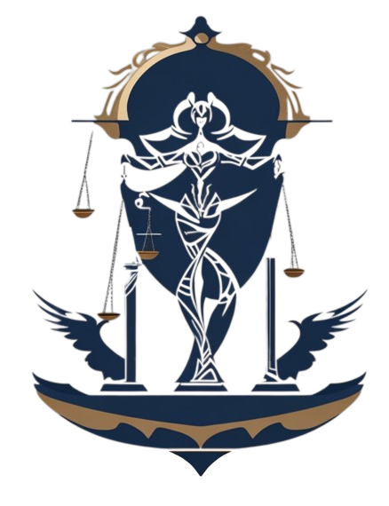

Sobre o Dia Do Advogado Trabalhista

O Tribunal Regional do Trabalho da 21ª Região (RN) celebra o Dia do Advogado e da Advogada Trabalhista
comemorado nesta segunda-feira (20 de junho). A homenagem é feita aos profissionais do Direito que atuam
diretamente com empregados e empregadores nas questões trabalhistas e são fundamentais para o andamento
dos processos e para a execução da atividade fim da própria Justiça do Trabalho.
A advocacia trabalhista foi oficializada no país a partir da criação da Consolidação das Leis do
Trabalho (CLT Decreto-Lei 5.452/43), que definiu como imprescindível a figura de um representante
legal que defendesse direitos de empregados e empregadores nos processos. Assim, tal advocacia
especializada conta com quase 80 anos de história oficial em apoio aos trabalhadores e empregadores na
pacificação dos conflitos trabalhistas.
Para colaborar no dia a dia com a atividade dos profissionais, o TRT-RN oferece uma sala exclusiva para
uso da Ordem dos Advogados do Brasil, no átrio das Varas do Trabalho de Natal, com equipamentos de
informática e internet disponíveis. Além disso, mantém relação institucional com a OAB/RN e com a
Associação Norte-riograndense dos Advogados Trabalhistas (ANATRA) e, juntos, promovem eventos que geram
a troca de conhecimento e valorizam a atividade desempenhada pelos advogados e advogadas trabalhistas do
estado.
Em mais um 20 de junho, o TRT-RN parabeniza a advocacia trabalhista por seus valorosos serviços para a
garantia da paz social buscada pela Justiça do Trabalho.O Tribunal Regional do Trabalho da 21ª Região
(RN) celebra o Dia do Advogado e da Advogada Trabalhista comemorado nesta segunda-feira (20 de junho). A
homenagem é feita aos profissionais do Direito que atuam diretamente com empregados e empregadores nas
questões trabalhistas e são fundamentais para o andamento dos processos e para a execução da atividade
fim da própria Justiça do Trabalho.
A advocacia trabalhista foi oficializada no país a partir da criação da Consolidação das Leis do
Trabalho (CLT Decreto-Lei 5.452/43), que definiu como imprescindível a figura de um representante
legal que defendesse direitos de empregados e empregadores nos processos. Assim, tal advocacia
especializada conta com quase 80 anos de história oficial em apoio aos trabalhadores e empregadores na
pacificação dos conflitos trabalhistas.
Para colaborar no dia a dia com a atividade dos profissionais, o TRT-RN oferece uma sala exclusiva para
uso da Ordem dos Advogados do Brasil, no átrio das Varas do Trabalho de Natal, com equipamentos de
informática e internet disponíveis. Além disso, mantém relação institucional com a OAB/RN e com a
Associação Norte-riograndense dos Advogados Trabalhistas (ANATRA) e, juntos, promovem eventos que geram
a troca de conhecimento e valorizam a atividade desempenhada pelos advogados e advogadas trabalhistas do
estado.
Em mais um 20 de junho, o TRT-RN parabeniza a advocacia trabalhista por seus valorosos serviços para a
garantia da paz social buscada pela Justiça do Trabalho.